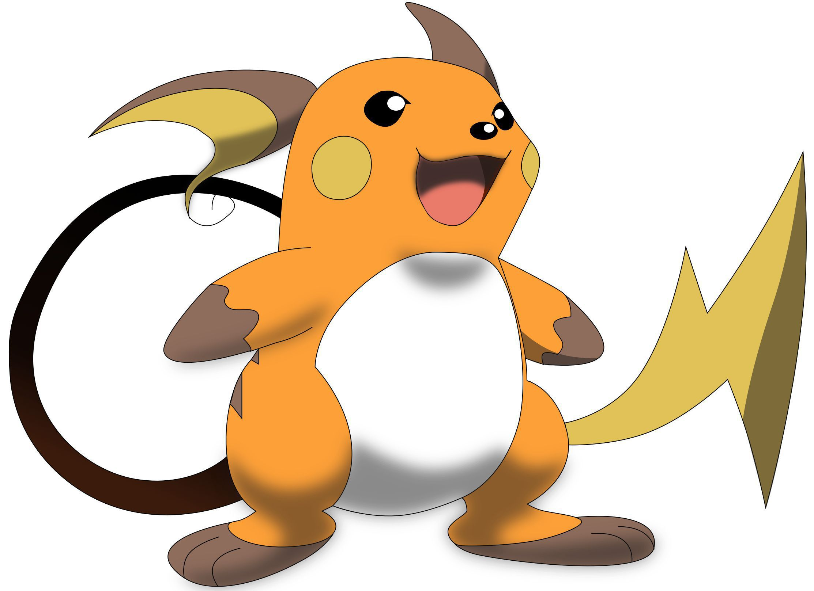

Pikachu
Pikachu es el Pokémon más conocido de la historia ya que es el
acompañante del protagonista de la serie, Ash Ketchum y la mascota
representante de la franquicia Pokémon. Pikachu evoluciona de
Pichu cuando incrementa su nivel de amistad, y evoluciona en
Raichu con una piedra trueno.
Su nombre proviene de las palabras japonesas ピカピカ pikapika
(onomatopeya japonesa de algo chispeante) y チューチュー chuchu
(onomatopeya japonesa para el sonido de los ratones), lo que le da
un sonido atractivo y fácil de recordar.
Su diseño es simple pero llamativo, con un color amarillo
brillante, dos rayas marrones en su espalda, orejas puntiagudas y
mejillas rojas. Su cola tiene forma de rayo, lo que refleja su
tipo eléctrico. Su aspecto es tierno y simpático, lo que le hace
ganarse el cariño de muchos fans.
Su personalidad es alegre, curiosa, leal y valiente. En el anime,
se muestra muy unido a Ash y a sus amigos, y siempre está
dispuesto a ayudarlos y protegerlos. También tiene un lado
travieso y juguetón, lo que le hace tener momentos divertidos y
cómicos.
Su popularidad se ha mantenido a lo largo de los años, ya que ha
aparecido en todos los videojuegos, películas y temporadas del
anime de Pokémon. También ha sido protagonista de algunos juegos
propios como Pokémon Amarillo o Pokémon: Let's Go, Pikachu!.
Además, ha sido incluido en otros juegos como Super Smash Bros.,
donde es uno de los personajes más usados.
